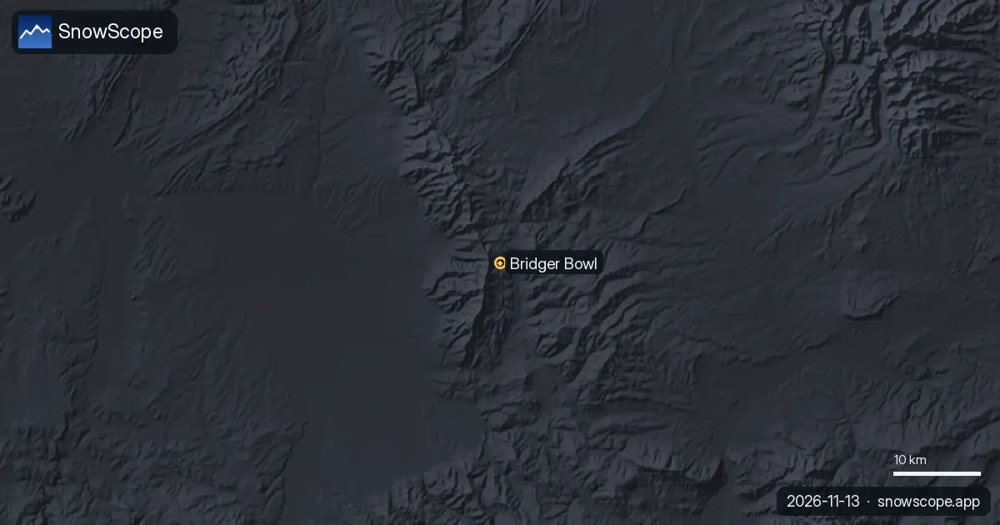

Bridger Bowl a dicembre: vale la pena 86 $ online prima di Natale?
Bridger Bowl, la stazione no-profit di Bozeman, ha uno dei listini più chiari delle Rockies: 86 $ online, 99 $ alla cassa per il 2026/27. La domanda di dicembre è la neve. Secondo la nostra serie storica, mezza montagna aveva 20 in (50 cm) il 15 dicembre solo nella metà di tutti gli inverni.
Le previsioni neve in tempo reale per Bridger Bowl nell'app SnowScopeAltezza neve, allerte powder e mappa 3D, gratis.Una montagna, un solo listino
Bridger si trova nella Bridger Range a nord di Bozeman, con 12 impianti e circa 26 mi (42 km) di piste sulla nostra mappatura, da circa 6.120 ft (1.865 m) a 8.060 ft (2.457 m). La parte alta della montagna è nota per essere molto ripida, e i pendii bassi sono lunghi e accoglienti.

Quanto costa
Per il 2026/27, uno skipass giornata intera adulti (19-69 anni) costa 86 $ online e 99 $ alla cassa, senza distinzione tra feriale e weekend. Il biglietto pomeridiano, dalle 12:30, costa 74 $. L'Any Day Pack dà tre giorni non consecutivi senza blackout per 230 $.

Perché fine dicembre è la scelta più sicura
La neve persistente raggiunge mezza montagna, circa 7.090 ft (2.161 m), a metà ottobre in un inverno tipico, ma si accumula lentamente. Un tipico 1° dicembre ha lì 15 in (37 cm), il 15 dicembre 20 in (51 cm), e il giorno di Natale 22 in (57 cm).
La quota di settimane con buona neve a mezza montagna è del 37 % nella prima settimana di dicembre, 50 % nella seconda, 65 % nella terza e 78 % nella settimana di Natale. La cima va meglio, con 29 in (73 cm) in un tipico 15 dicembre e il 78 % degli inverni sopra i 20 in. La base è il punto debole: 12 in (31 cm) in quella data.
Bridger, Snowbowl o Snow King?
Montana Snowbowl vicino a Missoula fa pagare 78 $ nei feriali e 85 $ nel weekend e aveva 30 in (76 cm) a mezza montagna in un tipico 15 dicembre, con l'83 % degli inverni sopra i 20 in. Snow King a Jackson parte da 100 $ e aveva 28 in (71 cm), con l'87 %.
Per un viaggio di inizio dicembre, Snowbowl è la scommessa migliore del Montana sulla neve. Per la settimana di Natale e dopo, il prezzo online di Bridger e il suo terreno ripido hanno senso.
Allora e oggi
I primi 15 inverni della nostra serie storica avevano 29 in (73 cm) a mezza montagna in un tipico 15 dicembre, con il 67 % sopra i 20 in; gli ultimi 15 avevano 19 in (50 cm), con il 47 %. Lo scorso inverno aveva 18 in (45 cm) a quella data.
Consigli per sciatori
- Comprate online, mai alla cassa: 86 $ invece di 99 $.
- Usate l'Any Day Pack per distribuire tre giorni su fine dicembre e gennaio.
- La Bridger Canyon Road può essere ghiacciata: gomme da neve, e pazienza nelle mattine di neve fresca.
- Il terreno di cresta richiede attrezzatura da valanga e un compagno: controllate prima il bollettino nivologico.
Riferimenti e crediti
- Bridger Bowl, lift ticket pricing 2026/27 (official) bridgerbowl.com/tickets-passes/lift-tickets
- Montana Snowbowl, lift tickets 2026/27 (official) montanasnowbowl.com/sbblog/lift-tickets/
- Snow King Mountain, winter day tickets (official store) store.snowkingmountain.com/en/catalogue/category/500-winter-lift-tickets/510-day-ticket_447/
- OpenSkiMap (mapped lifts and runs) openskimap.org/
- avalanche.org, US avalanche centers and forecasts avalanche.org/
Su questi numeri
Numeri della neve: storico neve SnowScope, 46 inverni passati (1980-81 - 2025-26) alle quote indicate (base, metà, vetta), una ricostruzione della neve passata per un'area corretta per la quota (basata su ERA5-Land; Snow_Hydro 1 km per il Marocco), non i bollettini della località. Neve attuale: la mappa SnowScope. Impianti, piste e quote: mappatura OpenSkiMap. Prezzi: le pagine ufficiali elencate qui sotto, lette il 13 novembre 2026; i prezzi dinamici cambiano con la data e la domanda.
Bollettini valanghe ufficiali: Gallatin National Forest Avalanche Center
Cita questo articolo
Per ricerca, didattica o stampa: numeri e grafici sono liberamente riutilizzabili con licenza CC BY 4.0 citando così.
SnowScope (2026), Bridger Bowl a dicembre: vale la pena 86 $ online prima di Natale?, https://snowscope.app/blog/it/2026/11/bridger-bowl-bozeman-december-ski-cost.html, consultato il 2026-11-15
SnowScope (Atlas Labs). (2026, November 15). Bridger Bowl a dicembre: vale la pena 86 $ online prima di Natale?. SnowScope snow reports. https://snowscope.app/blog/it/2026/11/bridger-bowl-bozeman-december-ski-cost.html
BibTeX
@misc{snowscope2026bridgerbowlbozemandecemb,
author = {{SnowScope (Atlas Labs)}},
title = {Bridger Bowl a dicembre: vale la pena 86 $ online prima di Natale?},
year = {2026},
month = nov,
howpublished = {\url{https://snowscope.app/blog/it/2026/11/bridger-bowl-bozeman-december-ski-cost.html}},
note = {Published 2026-11-15 09:34 UTC; accessed 2026-11-15}
}· CC BY 4.0 · Metodi, dati e strumenti →
Bridger Bowl: neve e temperatura per quota, quest'inverno vs lo scorso (strumenti) →
Segui Bridger Bowl
Gratis: un messaggio quando arriva la neve e il meteo ogni mattina.